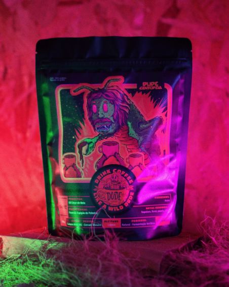
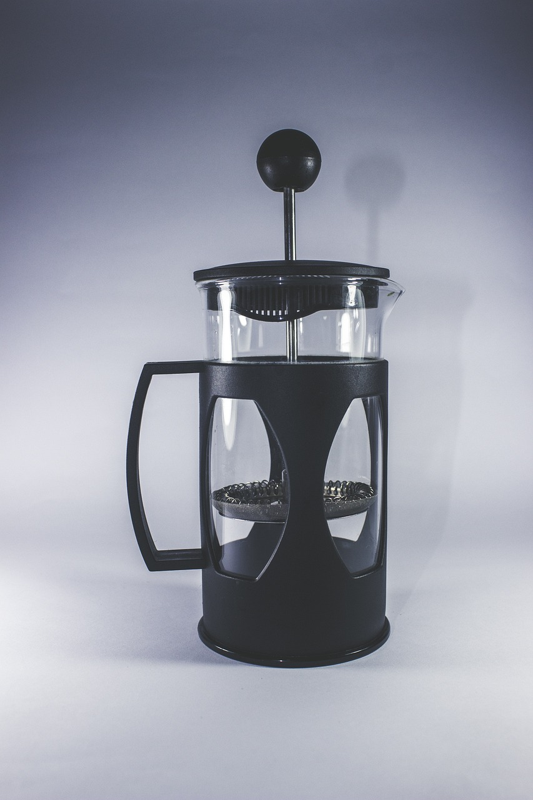
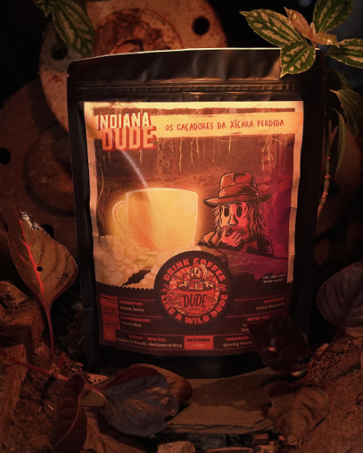
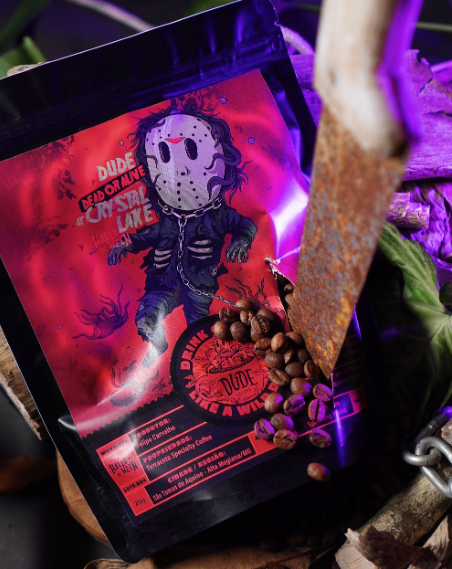
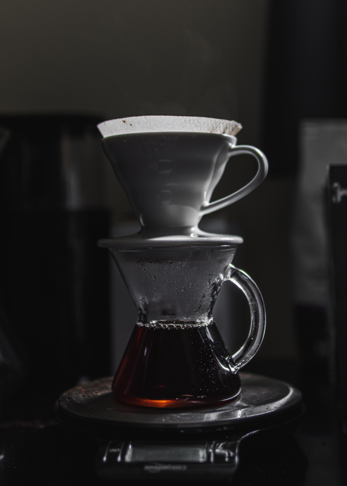

Um quarto de século de dedicação à arte do café. Na Cafeteria IOS, a cada xícara, uma história é contada. Há 25 anos, começamos nossa jornada em busca da perfeição no mundo do café, e hoje, continuamos a elevar o padrão. Nossos grãos são cultivados com cuidado, torrados com precisão e transformados em obras-primas líquidas por nossos baristas habilidosos.
25 anos de paixão, sabor e elegância. Bem-vindo à nossa Cafeteria, onde o tempo aperfeiçoou nossos grãos e nossa hospitalidade. Cada xícara é uma obra-prima, cada encontro uma lembrança. Junte-se a nós e saboreie a tradição, em cada gole.
Conheça nossa cafeteria e experimente algum de nossos deliciosos cafés feitos por nossos baristas, ou se preferir, adquira os produtos em nosso site e deguste o seu café diretamente de sua casa!
Desça a página e conheça nossos produtos e serviços!
|  |
Café Dude Centopéia (Rapadura, Floral, Papaya) Por apenas R$49,99 |
|  |
Cafeteira French Press Por apenas R$128,00 |
|  |
Café Indiana Dude (Frutas Vermelhas, Morango, Cereja, Malte e Alcoólico) Por apenas R$59,90 |
|  |
Café Dude Dead or Alive (Melaço, Uva, Cereja, Alcoólico) Por apenas R$64,00 |
|  |
Kit V60 Por apenas R$189,90 |